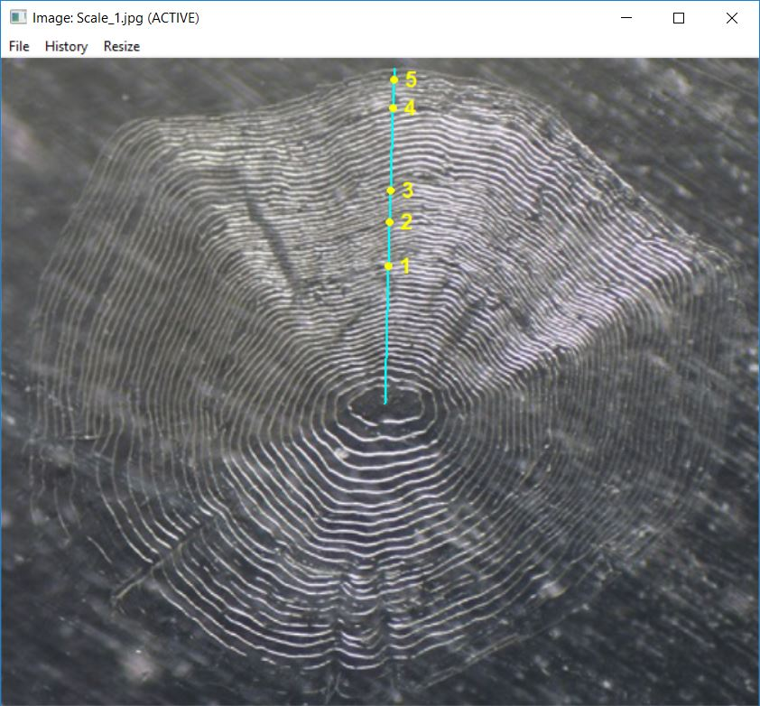
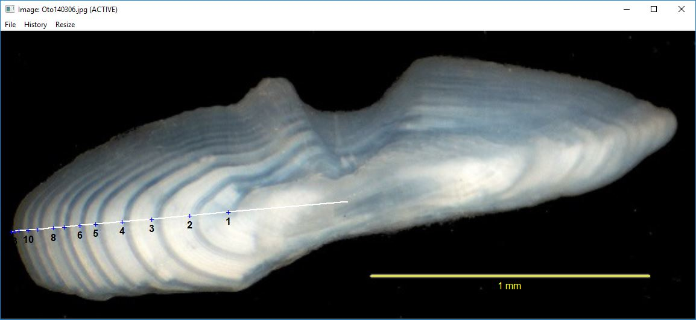
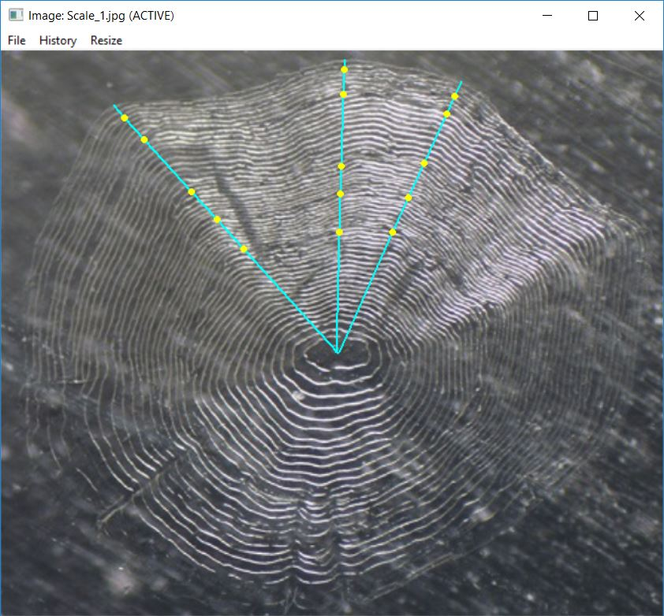
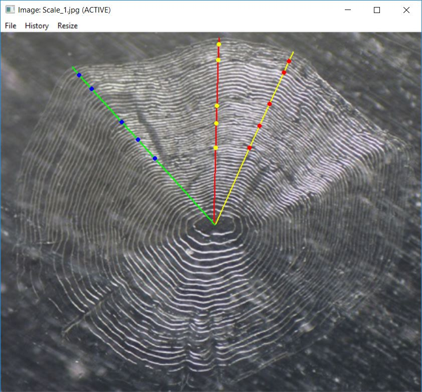

vignettes/seeRadiiData.Rmd
seeRadiiData.RmdA method for visualizing annular points that a user (or users) selected on a calcified structure is described in this vignette. This vignette assumes that you have an R data file or files created from selecting points on a calcified structure using digitizeRadii() as described in the Collecting Radial Measurements vignette. It also assumes that you understand the language and functions introducted in that vignette.
This vignette will use the following R data files:
digitizeRadii("Oto140306.jpg",id="140306",reading="DHO",
description="Used to demonstrate use of scale-bar.",
scaleBar=TRUE,scaleBarLength=1,edgeIsAnnulus=TRUE,
windowSize=12)Only the RFishBC package is needed for this vignette.
You can review the selected annuli on a structure with showDigitizedImage(), which requires only the name of an R data file created from digitizeRadii().1
showDigitizedImage("Scale_1_DHO.rds")
The plotting character, color, and relative size of the selected points may be changed with pch.show=, col.show=, and cex.show=, respectively. By default, the points are connected which will display as a linear transect if makeTransect=TRUE (the default) was used when selecting annuli in digitizeRadii(). The color and width of the connected lines may be changed with col.connect= and lwd.connect=. The connected lines may be excluded altogether with connect=FALSE. Annuli will be numbered if showAnnuliLabels=TRUE (the default) with label colors and relative size changed with col.ann= and cex.ann=, respectively. Annuli for which numbers are plotted may be controlled with annuliLabels= (e.g., only the first six plus several others after that are shown for the Kiyi otolith below). Defaults for all of these arguments may be set with RFBCoptions() as was demonstrated in the Setting Arguments section of this vignette
showDigitizedImage("Oto140306_DHO.rds",pch.show="+",col.show="blue",
col.connect="white",col.ann="black",cex.ann=1,
annuliLabels=c(1:6,8,10,13))
You can also just show the points without the transect and individually control the color of the annuli labels.
showDigitizedImage("Oto140306_DHO.rds",annuliLabels=c(1:6,8,10,13),
connect=FALSE,col.ann=c(rep("black",8),"white"),cex.ann=1)
In some instances, you may be interested in visually comparing the selected points from multiple readings of the same structure. The showDigitizedImage() function can accomplish this if it is given a vector of R data file names created from the same structure.
The listFiles() function (described in the Collecting Radial Measurements vignette) may be used to identify all filenames in the current working directory that have the file extension given in the first argument. For example, all files with the “rds” extension are found below.
listFiles("rds")
#> [1] "DWS_Oto_89765_DHO.rds" "Oto140306_DHO.rds" "Oto140306_OHD.rds"
#> [4] "Scale_1_DHO.rds" "Scale_1_ODH.rds" "Scale_1_OHD.rds"
#> [7] "Scale_2_DHO.rds" "Scale_2_OLDwNoNote.rds" "Scale_3_DHO.rds"This list of names can be further filtered by including other key words for the filenames in other=. For example, all files with the “rds” extension that contain the keyword “Scale_1” are returned below. For our purposes here, these filenames are saved into an object (e.g., fns).
( fns <- listFiles("rds",other="Scale_1") )
#> [1] "Scale_1_DHO.rds" "Scale_1_ODH.rds" "Scale_1_OHD.rds"The multiple readings of “Scale_1” can be seen by giving this set of filenames to showDigitizedImage().2
showDigitizedImage(fns)
Aspects of the connecting lines and points may be controlled with arguments to showDigitizedData(). For example, the code below uses different colors for each set of connecting lines and points.
showDigitizedImage(fns,col.show=c("yellow","red","blue"),
col.connect=c("red","yellow","green"),lwd.connect=2)